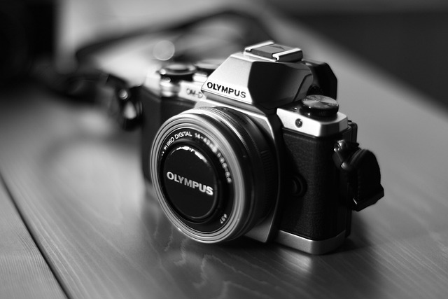

Кратка история

Всичко започва през 19-ти век. Първата успешна снимка е направена от Жозеф Нисефор Ниепс през 1826 година, но процесът е отнел цели 8 часа експозиция.
Дагеротипът
Луи Дагер усъвършенства процеса и създава "Дагеротипа" – метод, който позволява създаването на детайлни изображения върху посребрени медни плочи. Това поставя началото на портретната фотография.
Ерата на Кодак
Истинската революция идва с Джордж Ийстман и неговата камера "Kodak". С лозунга "Вие натискате бутона, ние вършим останалото", фотографията става достъпна за масите.